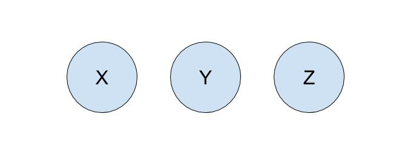
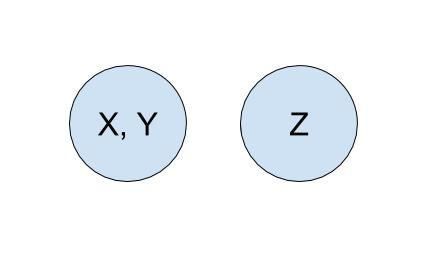
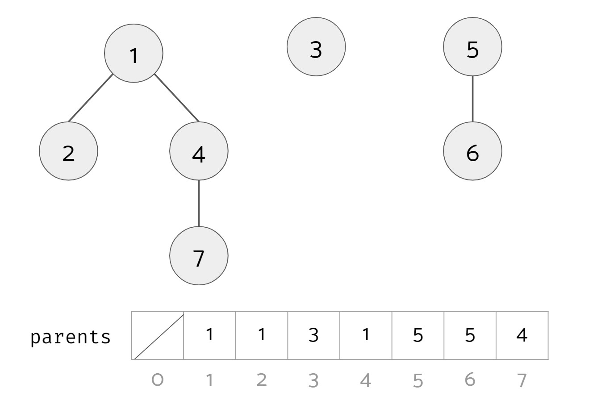
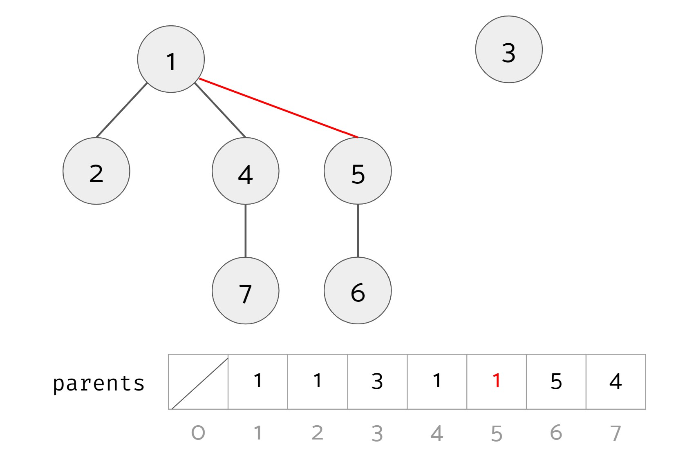
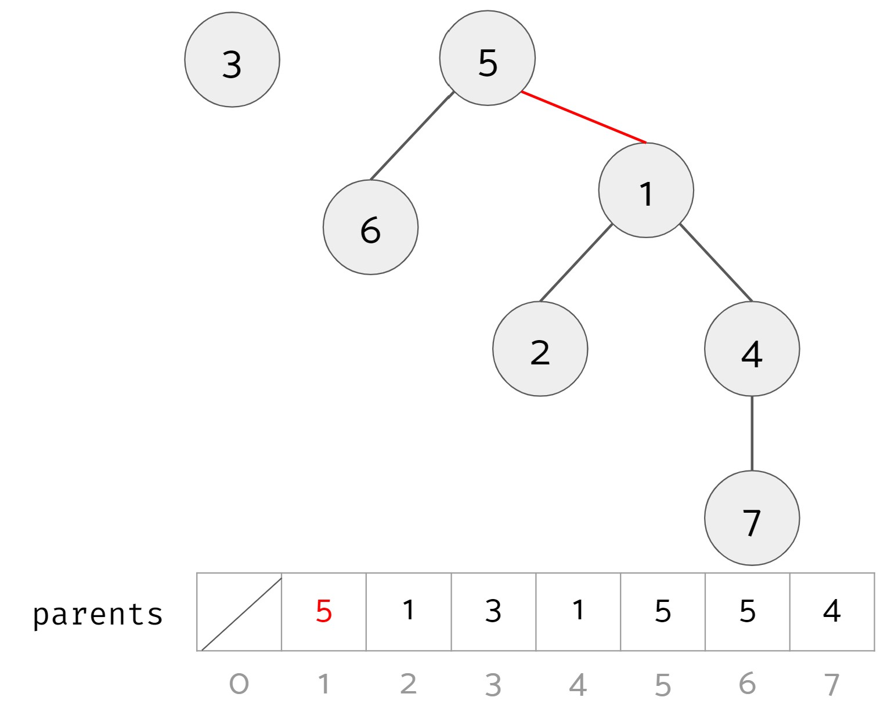
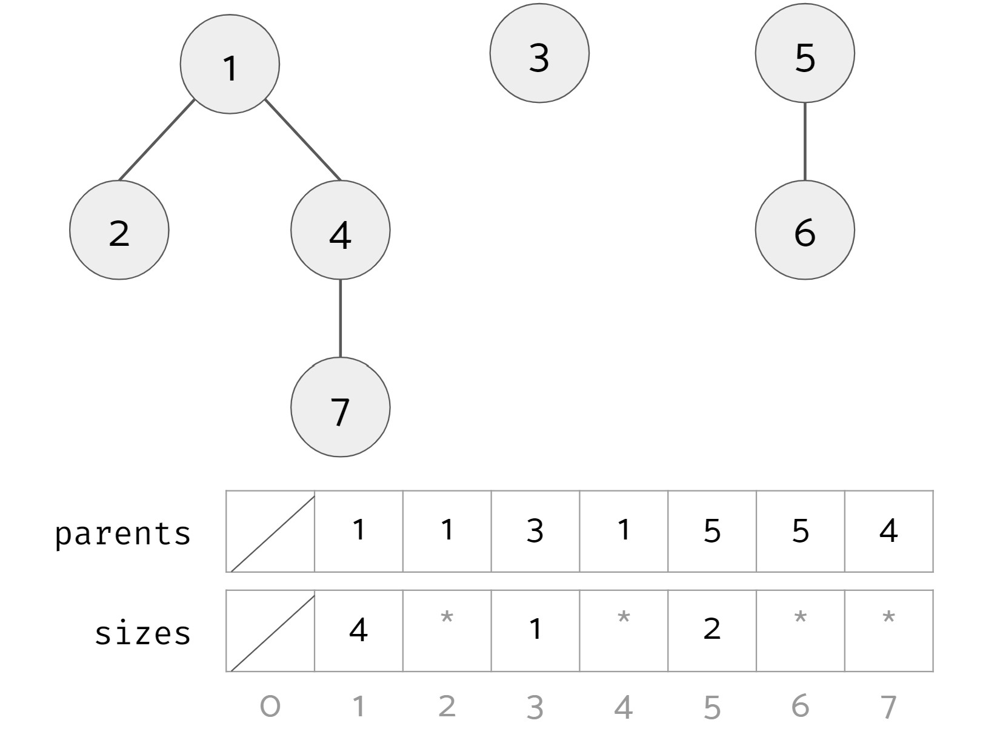
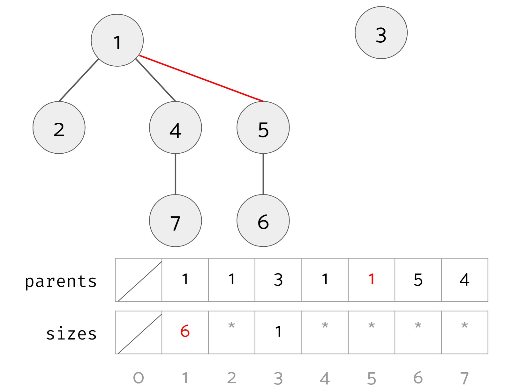
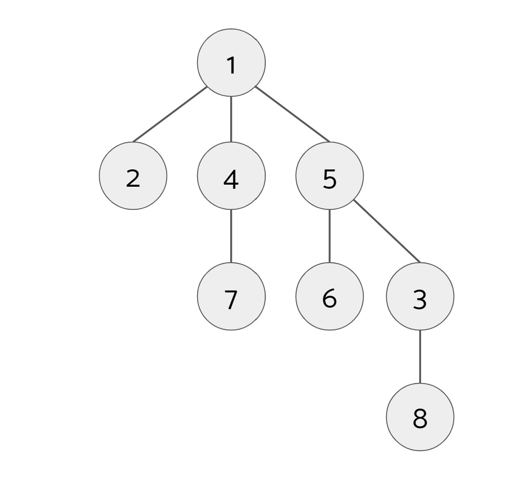
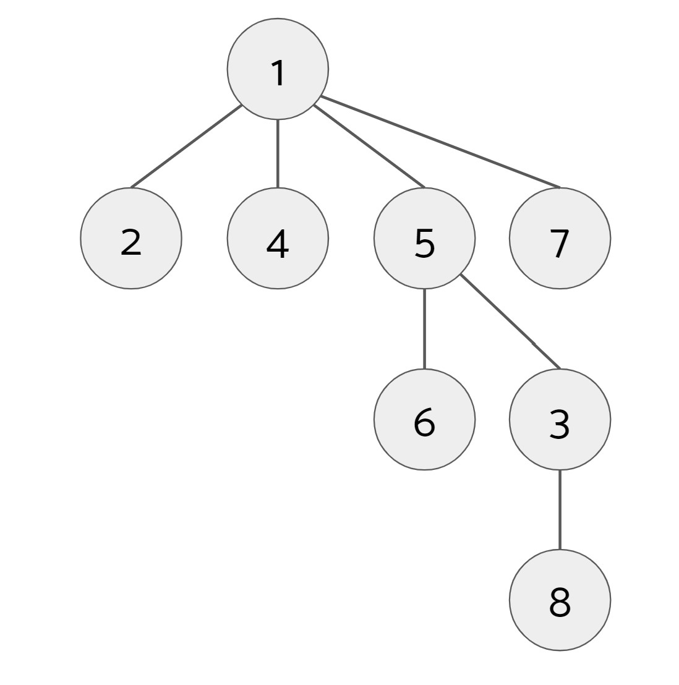
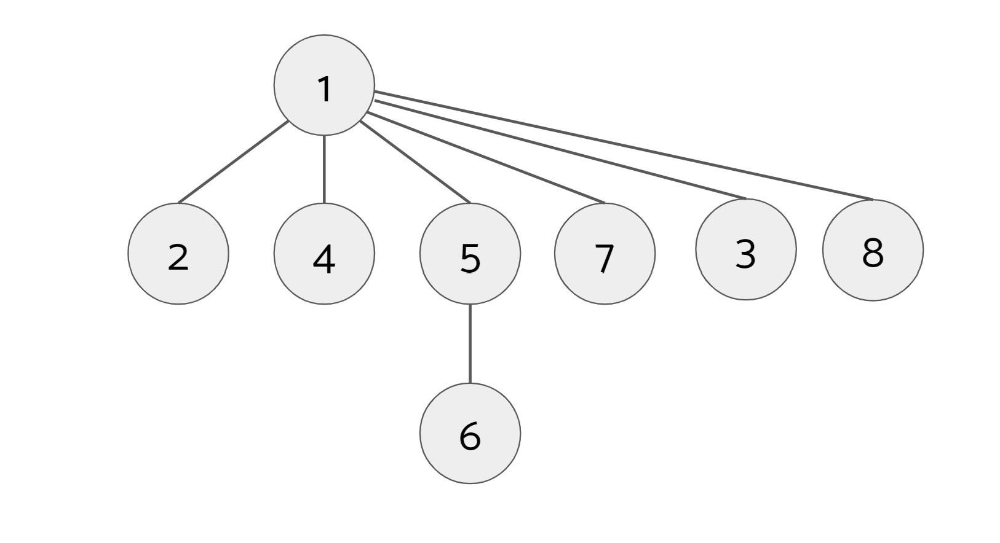

Navigation
A. Intro
In this lab, we will be exploring the union find data structure (also called disjoint sets), and you will be implementing your own weighted quick union data structure. We will then explore minimum spanning trees (MSTs) of graphs, and you will be implementing Kruskal's Algorithm to find the MST of a graph. Union Find and MSTs are covered in lecture 34, so you can look at the lecture for a quick refresher, or the lab spec will also reintroduce the topics.
As always, you can get the skeleton of this lab with:
git fetch shared
git merge shared/lab14 -m "get lab14 skeleton"B. Union Find
Optional conceptual introduction here.
Suppose we have a collection of companies that have gone under mergers or acquisitions. We want to develop a data structure that allows us to determine if any two companies are in the same conglomerate. For example, if company X and company Y were originally independent but Y acquired X, we want to be able to represent this new connection in our data structure. How would we do this? One way we can do this is by using the union find, or disjoint, sets data structure.
The disjoint sets data structure represents a collection of sets that are
disjoint, meaning that any item in this data structure is found in no more than one set. When discussing this data structure, we often limit ourselves to two operations, union and find, which is also why this data structure is also called the union-find data structure. We will be using these two
names interchangeably.
The union operation will combine two sets into one set. The find operation will take in an item, and tell us which set that item belongs to by returning the representative item of its set. With this data structure, we will be able to keep track of the acquisitions and mergers that occur!
Let's run through an example of how we can represent our problem using disjoint sets with the following companies:

To start off, each company is in its own set with only itself and a call to find(X)
will return $X$ (and similarly for all the other companies). If $Y$ acquired $X$,
we will make a call to union(X, Y) to represent that the two companies should now be linked.
In this call to union, one of the companies is picked to be the representative of this set.
If the representative is picked to be $Y$, a call to find(X) will return $Y$, and a call
to find(Y) will also return $Y$. If the representative is picked to be $X$, a call to
find(X) will return $X$, and a call to find(Y) will also return $X$.

Quick Union
For the rest of the lab, we will work with positive integers as the items in our union find.
We will represent each set as its own tree. Each tree will have the following qualities:
- The nodes in the tree will be the items in the same set.
- Each node only needs a reference to its parent rather than a direct reference to the representative of the set.
- The top of each tree (we refer to this top as the "root" of the tree) will be the representative its set.
Example: We have a union find data structure for the numbers 1 to 7.

Here, there are three distinct sets:
- Set #1 with items 1, 2, 4, and 7. The root of this set is 1.
- Set #2 with item 3. The root of this set is 3.
- Set #3 with items 5 and 6. The root of this set is 5.
In code, we can conveniently represent these trees as an array parents. The $i$th item in parents contains the parent of that item. For example, 7's parent is 4, so the value at index 7 in parents is 4. An item that doesn't have a parent (i.e. an item that is the root of its tree) has itself as its parent.
Find
We want to define an operation find(u) that takes in an item and returns the representative of the set it belongs to. In this case, the representative of the set is the root of the tree that u belongs to. In the example above, find(1), find(4), and find(7) should all return 1 because 1 is the root of the tree they belong to. find(3) should return 3, and find(6) should return 5.
SamePartition
We also want to define an operation samePartition(u, v) that takes in two items and returns whether or not they are in the same set. In the example above, samePartition(2, 4) should return true, while samePartition(3, 6) should return false.
To see if two items are in the same set, we see if the representatives of the sets that each item belongs to are the same by checking if the roots of the trees each item belongs to are the same.
Union
Lastly, we want to define the opreation union(u, v) that will take the two items and union the two sets that the two items belong to. It will do nothing if the two items are already in the same set. In the example above, if we called union(4, 5) we should end up with 2 sets: set #1 with items 1, 2, 4, 5, 6, and 7, and set #2 with item 3.
To do this, we take the roots of the trees of the two items, and make one root the child of the other root. Below are two valid results of calling union(4, 5) (changes highlighted in red):
Option 1 
Option 2 
Looking at the two results, it seems like option 1 is superior to option 2 since it leads to a bushier tree. This leads us to the weighted quick union data structure. In a regular quick union, both option 1 and option 2 are valid results. In a weighted quick union, when unioning, you should always put the root of the tree with more nodes as the parent of the root of the tree with fewer nodes. (If the two trees have the same size, break ties arbitrarily.) In the example above, the result of unioning should be option 1.
To achieve this, for each item that is the root of its tree, we keep track of the size of its tree in an array sizes. Here is an example:

1, 3, and 5 are the roots of their trees so their corresponding values in sizes are 4, 1, and 2 respectively. For other non-root items, the asterisks signify that that the sizes array may have a value there, but we don't care about what they are. After calling union(4, 5), we get the following (changes highlighted in red):

Note that the size associated with item 1 is now 6. The size associated with 5 may still be 2, but it is no longer relevant.
To recap, the algorithm for union(u, v):
- Find the root of
uand root ofv. If they are the same, you are done. - Find the sizes of the trees of each root.
- Make the root with the larger size the parent of the root with the smaller size. If there is a tie in size, we pick the parent arbitrarily.
- Update the size of the root with the larger size that became the parent.
Path Compression
Even though we have made a speedup by using a weighted quick union data
structure, there is still yet another optimization that we can do. What would
happen if we had a tall tree and called find repeatedly on the deepest leaf? Each time, we would have to traverse the tree from the leaf to the root.
A clever optimization is to move the leaf up the tree so it becomes a direct
child of the root. That way, the next time you call find on that leaf, it will run much more quickly. Remember that we do not care if a node has a certain parent; we care more about general connectivity (and therefore only what the root is), which is why we can move the leaf up to be a child of the root without losing important information about our disjoint sets structure.
An even more clever idea is that we could do the same thing to every node that is on the path from the leaf to the root, connecting each node to the root as we traverse up the tree. This optimization is called path compression. Once you find an item, path compression will make finding it (and all the nodes on the path to the root) in the future faster.
Example: We have the following tree with 1 as the root.

We call find(7):

When we call find(7), we find that 1 is its root so we set 7's parent to be 1. Next, we call find(8):

When we call find(8), we find that 1 is its root, so we set 8's parent to be 1. However, along the way, we also find that 3's root is also 1, so we set 3's parent to be 1. (We also find along the way that 5's root is 1, but 5's parent is already 1 so there is no change.)
Since the find operation is used when calling union, if path compression is implemented in find, union will also be optimized.
Exercise: Implementing UnionFind
Fill out the FIXMEs UnionFind.java. You should be implementing a weighted quick union with path compression. The path compression is optional and ungraded. Suggested order of completion:
- Add instance attributes and fill out the constructor.
- Complete
findwithout path compression. - Complete
union. Be sure to usefindand not repeat code, and make sure you are joining trees based on their sizes. All tests inUnionFindTest.javashould now pass. - (Optional) Add path compression to
find. Depending on your implementation, this should be a 1-2 line change! All tests inUnionFindTest.javashould still pass.
C. Minimum Spanning Trees
Optional conceptual overview video here.
We assume you already know what a MST is. If not, review lecture 34.
Kruskal's Algorithm
Kruskal's algorithm is an algorithm that can calculate the MST of a weighted graph $G$. It goes as follows:
- Create a new graph $T$ with the same vertices as $G$, but no edges (yet).
- Make a list of all the edges in $G$.
- Sort the edges from smallest weight to largest weight.
- Iterate through the edges in sorted order. For each edge $(u, w)$, if $u$ and $w$ are not already connected by a path in $T$, add $(u, w)$ to $T$. This is the same as saying: for each edge $(u, w)$, if adding $(u, w)$ to $T$ would not create a cycle in $T$, add $(u, w)$ to $T$.
The new graph $T$ with the same vertices as $G$ and a subset of the edges from $G$ is the MST of $G$.
If you would like to see a visual demonstration of Kruskal's algorithm, see the Kruskal's Demo slides. Note that this demo has vertices starting at 0 but in this lab vertices start at 1. (It shouldn't make a difference).
The trickier part of Kruskal's is determining if two vertices $u$ and $w$ are already connected. We can revisit the data structure that specializes in determining if connections exist, the union find data structure! Each of the vertices of $G$ will be an item in our data structure. Whenever we add an edge $(u, w)$ to $T$, we can union the sets that $u$ and $w$ belong to. To check if there is already a path connecting $u$ and $w$, we see if $u$ and $w$ are in the same set.
Exercise: Implementing Kruskal's Algorithm
Consider an undirected graph whose vertices are numbered $1$ to $V$ and whose edges are labeled with non-negative integer weights. Given such a graph, we would like to find a minimal spanning tree that includes edges from the input graph. For this problem, we'll represent the input and output graphs using only arrays and ints. The graph is given as an array of edges, where each "edge" is a 3-item array where the first two items are the vertices the edge connects and the third item is the edge's weight. Fill in the file MST.java to use Kruskal's Algorithm to create this MST.
Hints
You will find the following tools useful:
- The
UnionFindclass you implemented in the first half of the lab. - The
Arrays.sortmethod. - The
EDGE_WEIGHT_COMPARATORgiven to you. It compares "edges" (three-element arrays) based on their weights.
Testing
The class MSTTest runs some JUnit tests on your MST algorithm. If a test case fails, you can use the main program of Utils.java to see exactly what graph was fed to it, if desired. The test cases will print out parameters for the main program that generate the graph in the test case. Executing the following command (after replacing the arguments with the printed out parameters) prints the corresponding test case and the MST your program produces from it.
java Utils V MINEDGES MAXWEIGHT RANDOM-SEED true(The arguments V through RANDOM-SEED tell Utils.randomConnectedGraph
what graph to generate). This is less helpful on really large test cases,
of course.
D. Submission
You will be required to submit:
UnionFind.javawith union() and find() implemented.MST.javawhich implements Kruskal's Algorithm.partner.txtif you worked with a partner.
The grading scheme is as follows (maximum 2pts total):
- 1.5pt: Passing UnionFind correctness tests. The AG UnionFind correctness tests are very similar to the provided UnionFindTest class.
- 1.5pt: Passing MST correctness and efficiency tests. These are the same as those provided in the MSTTest class. You will need a working UnionFind implementation to complete this portion. If you are seeing timeout errors in Gradescope, that means your code is taking too long to run.
Don't forget to push both your commits and tags for your final submission. As a reminder, you can push your tags by running:
$ git push --tags